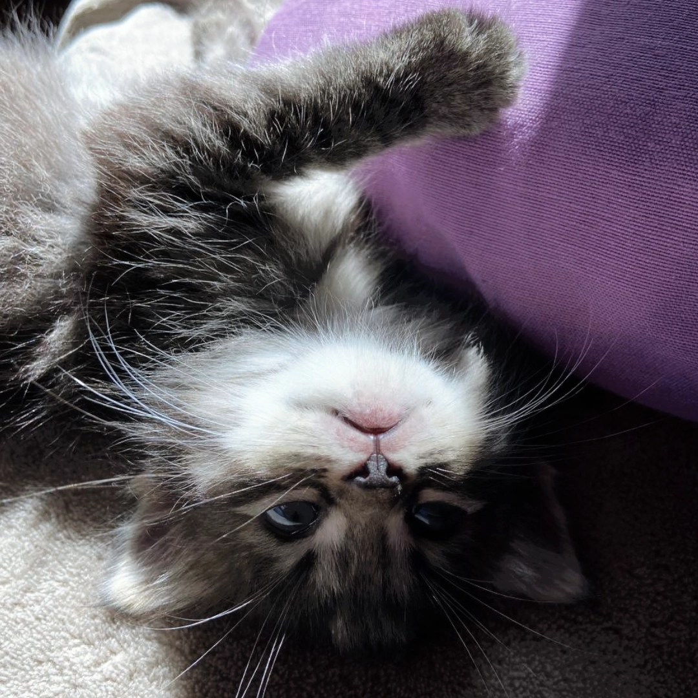
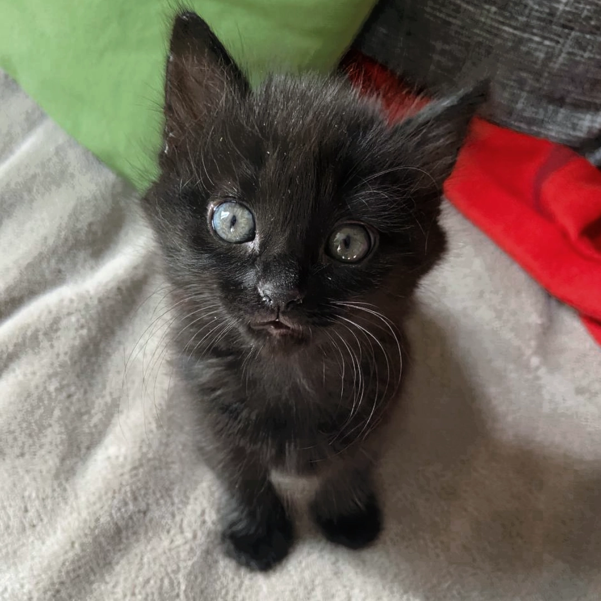
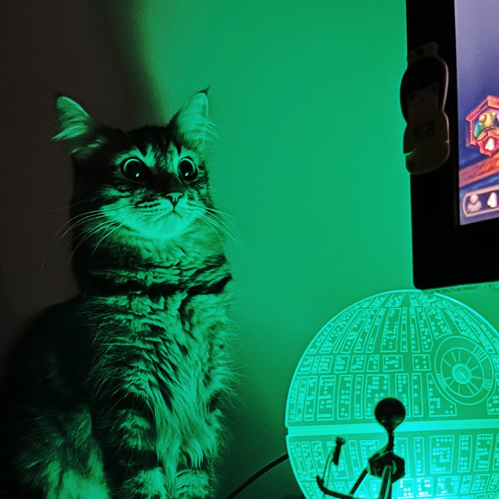
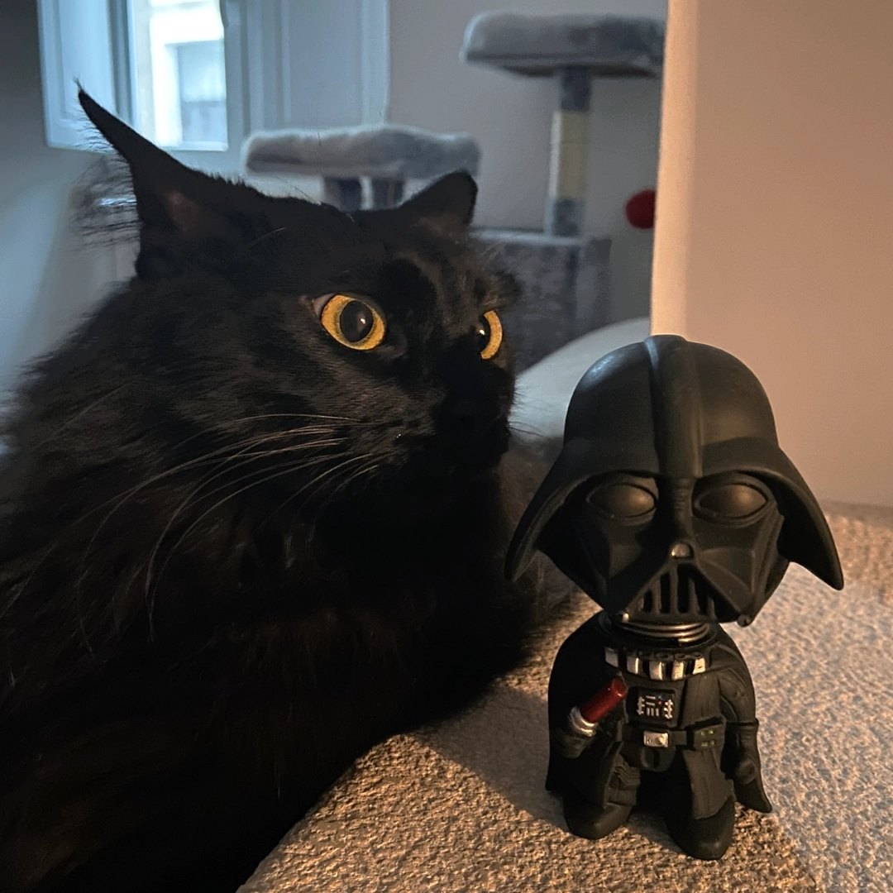
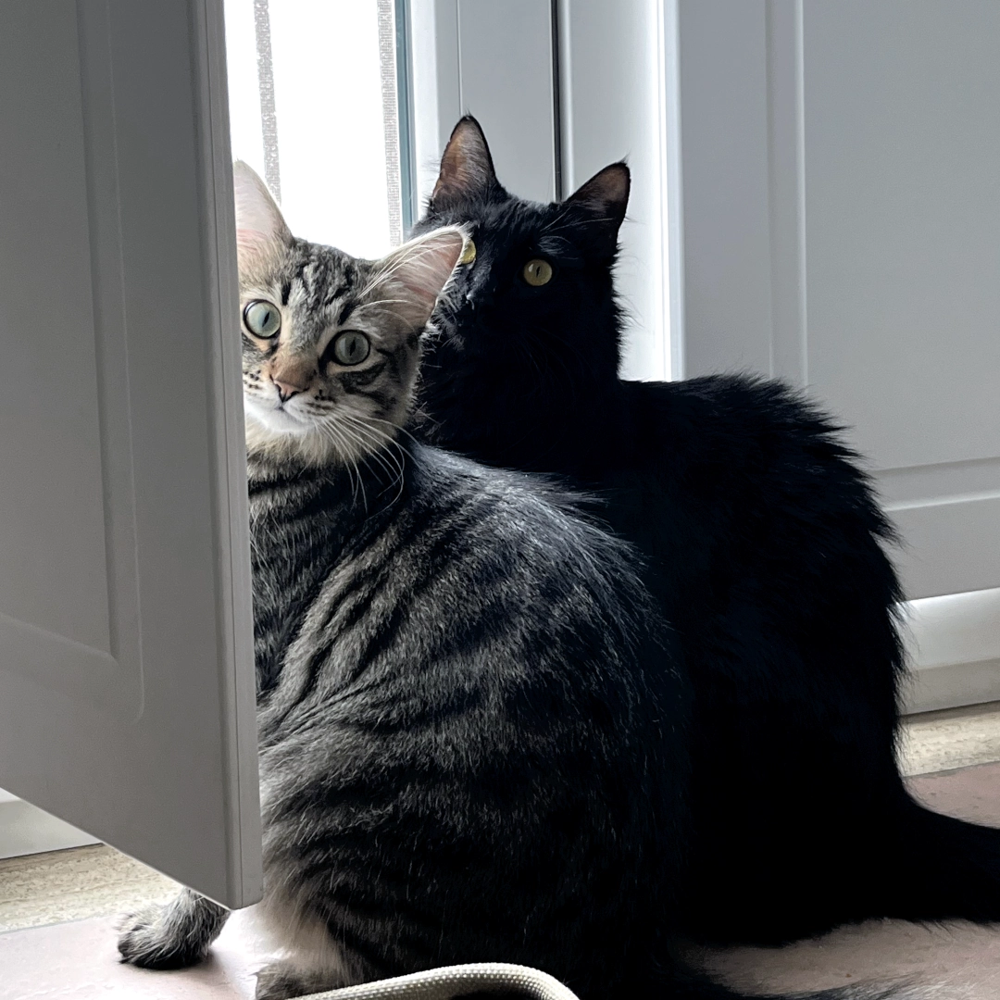
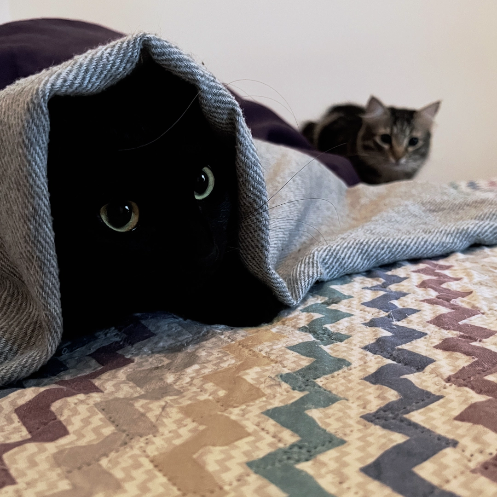
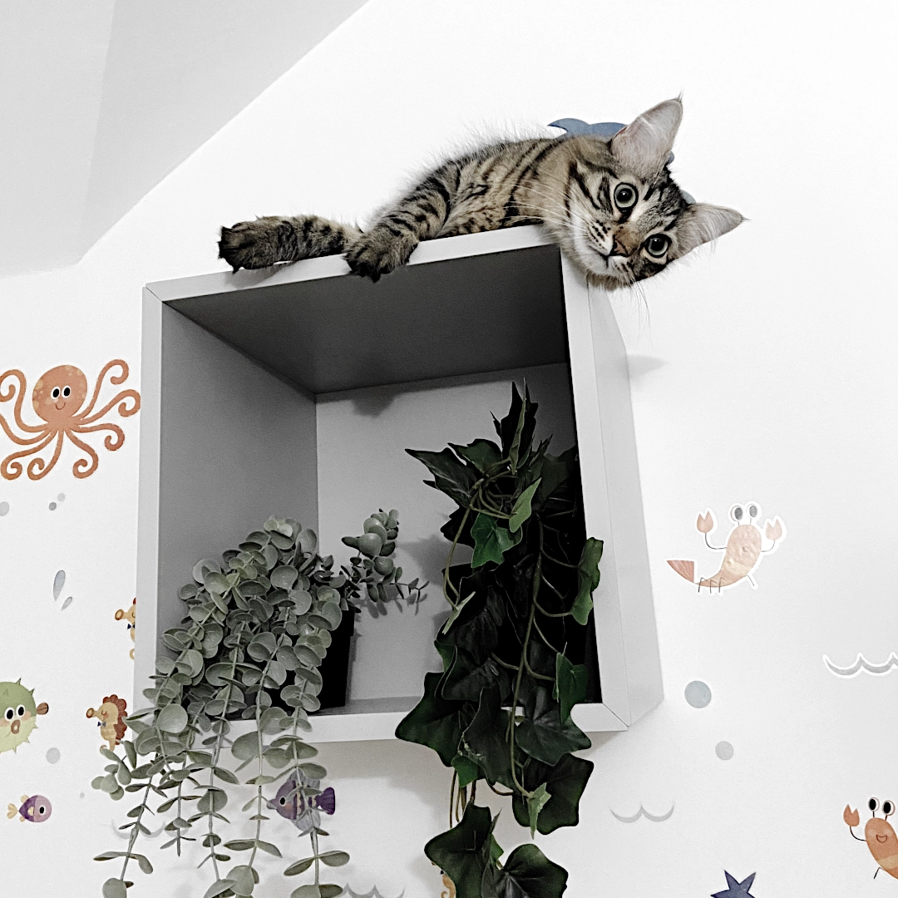

The Book
This is the Alcheminomicon, where all the necessary information for summoning the two felines is gathered.
"A bit of history about these two wonderful and sweet creatures that live with us."
These two cats are sisters and come from the countryside of a small
Italian province. We adopted them when they were just a few months
old and dedicated ourselves to ensuring their growth in a healthy
and harmonious environment.
Today we can proudly say they've been pampered and spoiled, but in
the end, who could resist two adorable faces like theirs? Despite
being raised the same way, they've naturally developed two
diametrically opposite personalities. And we can't help but mention
how incredibly sweet they are, bringing joy and affection into every
moment of our lives. Their names, by the way, reflect our passion
for video games (no need to mention them).
Alchepicats, Alemicats... Alchemicats, why this name?
I chose to call them 'Alchemicats' because I see them as two different chemical elements, each uniquely special, with diverse personalities and shades. Just a small change or a different situation can create an explosion of colors and fascinating behaviors. Our cats are like magical ingredients that, when mixed together, create a unique blend of fun, affection, and surprises, filling our lives with a rainbow of emotions every day.
...and that logo, what the heck is it?
If you've ever wondered what on earth the Alchemicats logo represents and how in the fantastical world it's connected to our cats, well, here's the wacky explanation: The logo depicts half of each of the cats, fused in a Yin and Yang style with the most vibrant colors you can imagine. The shapes are a bizarre mishmash of a bat, a dragon, and a ghost. This union symbolizes equality, while the colors are like our rainbow of feline personalities. The representations of the dragon and the bat are associations that emerged as the cats grew over time. Oh, and not to forget, the ghost... it represents us humans. Yep, let's be honest, cats totally own us!
"Childhood - The most meauwtiful moments while growing up"
  In the first few days at home, as they were still getting used to the new place, we snapped these awesome pics of our two little kitties. They were so tiny and shy, it's hard to believe how much they've grown since then. Those photos perfectly capture the sweetness and innocence of those early moments together, as they explored their new world with curiosity and caution. Looking back on those days, we can't help but smile and appreciate how lucky we are to have these two adorable critters in our lives.
"The most meme-rable moments captured randomly by camera"
  Even the rocks on Mars know that the best memes are always about cats, and our two furry friends are no exception. During those moments that feel like they're straight out of a sci-fi movie, we find ourselves in situations so meme-worthy it's like they were made for the internet. It's in those moments that we realize the internet was basically created for sharing this kind of stuff. By the way, do rocks even exist on Mars? If you've had a crappy day, just come back to this page and try not to dwell on it anymore
"Sneaky meetings to decide the fate of the world, just your everyday political shenanigans."
  In those moments, the whole world seemed to hang on the edge of the abyss. Behind closed doors of clandestine meetings, the darkness of conspiracy lurked, while the hideout became the stage for obscure plots. Very little leaked from those secret gatherings, just the whisper of voices barely spreading in the air. However, one thing was certain: something big was about to happen. It was suspected that pigeons and swallows were the eyes and ears behind the scenes, the silent messengers reporting every move in the town. And the rumors persisted: they were also the couriers of a dark power moving in the shadows.
"The ocean scene with fish and pirates, a nice way to be in the right mood."
 We have dedicated time and effort to create a comfortable environment suitable for our feline friends' needs. However, we are aware that there is always room for improvement. We prefer to address their needs day by day, ensuring an environment that allows them to live serenely. We strive to provide them with stimuli and activities that promote natural cat behavior. Although we acknowledge that recreating an ideal environment, at least from our point of view, is a challenging and ongoing task, finding fulfillment in caring for those we hold dear is a source of joy and satisfaction. We will continue to work consistently to improve the environment for our feline friends, ensuring they can enjoy comfort and stimuli tailored to their needs.
Biography
You might not know the details, but now you have no excuses; everything is written here.
Ciri
Also known as Cirilla and Zireael, the fashionista glides effortlessly from one point to another. Her psychic abilities are so strong that she can make you turn around without even saying a word, leaving you with a feeling of disorientation and prompting you to ask, "Hey Ciri?" Her response will be a simple "Mh Mh," leaving you both unsettled and amazed at her power. Her existence can be described by only a few people, as she doesn't enjoy visits from humans who aren't part of the family, but for everyone else, there's social media.
Zelda
A sweet yet complex European black cat, this little feline possesses extraordinary skills in human communication. Her facial expressions alone convey a range of emotions, and if that's not enough, her vocalizations will undoubtedly support her visual intentions. Without a shadow of a doubt, she makes it clear that her desires must be fulfilled, leaving no room for negotiation. Unlike her sister, the sociability of this cat is something unparalleled, beginning with a show of ballet moves and spins, almost always ending with an injury to the spectator.
Birthday
It's important to know when to celebrate and rid oneself of the burden of marshmallows.
May the fifth of April be with you
On this awesome day, we're celebrating the "birth" of our two
beloved kitties. Even though we don't know the exact date, we've
happily decided to mark it on April 5th. If you want to join in our
happiness, feel free to send your warm wishes on socials. That way,
we'll know just how much our cats mean to you. Thanks for being a
part of this sweet moment!